Organised in partnership between the British Museum and Norfolk Museums Service, Museum of the citizen in Norwich focused on Norfolk’s internationally important tourism offer, including the developing Deep History Coast partnership and the growing links between the museum sector and the creative industries in the East of England.
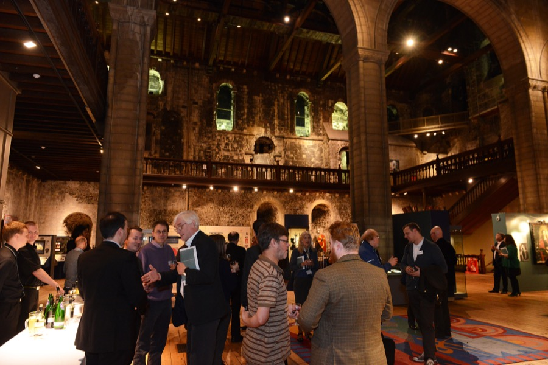Norwich Museum’s Castle Keep
Panel speakers included:
Steve Miller,Head of Norfolk Museums Service
Dr Nick Ashton,Curator of Palaeolithic and Mesolithic Collections, British Museum
Dr David Waterhouse,Curator of Natural History, Norfolk Museums Service
Dr Julia Farley,Curator of European Iron Age Collections, British Museum
Dr Tim Pestell,Senior Curator of Archaeology, Norfolk Museums Service
Chris Michaels,Head of Digital and Publishing, British Museum
Dr John Davies,Chief Curator and Keeper of Archaeology, Norwich Castle Museum
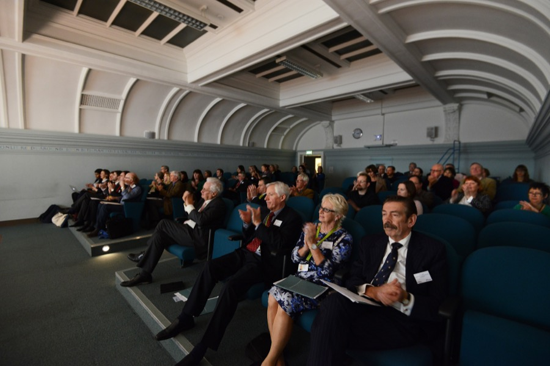
‘We’re absolutely thrilled to be hosting this partnership event with the British Museum – the museum of the citizen.’
– Steve Miller
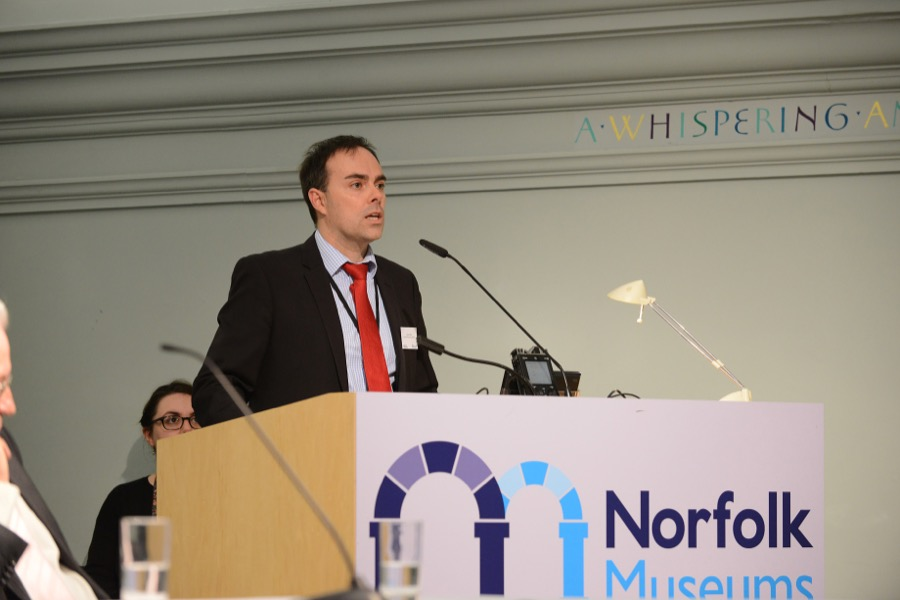
Steve Miller, Head of Norfolk Museums Service, Councillor George Nobbs and the British Museum’s Chris Michaels opened with a series of introductions to the longstanding partnership between the British Museum and Norfolk Museums Sevice.
‘Working in partnership is a fundamental thing for the Museum, it’s part of what we do and who we are and this series of events asks and tries to answer questions about the meaning and value of those partnerships.’ – Chris Michaels
The Norfolk Museum’s Castle Keep is currently hosting a British Museum spotlight tour of the Lacock Cup. In spring 2014 Norwich Castle was proud to be one of only six UK venues chosen to host the British Museum’s touring exhibition Roman Empire: Power & People., which attracted over 65,000 visits. In return, fourteen items from Norwich Museums Service’s Iron Age, Romano-British and Early Medieval collections have been loaned to the British Museum for the exhibition Celts: art and identity.
‘I want to leave you with a single message: the Deep History Coast is not just of Norfolk importance, it’s not just of British importance, it’s actually of global importance.’ – Nick Ashton
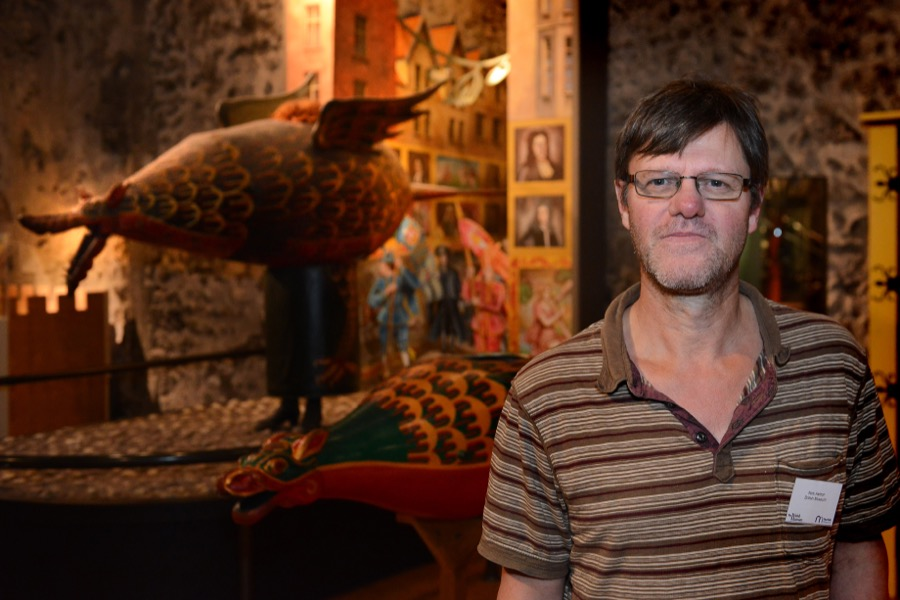
Norfolk Museums Service staff have been engaged in major discoveries which have transformed our understanding of early British prehistory. Deep History Coast, a new and exciting initiative in partnership with Visit Norfolk and Norfolk Trails, integrates some of Norfolk’s most significant archaeological sites together with museum collections. Here, Dr Nick Ashton, Curator of Palaeolithic and Mesolithic Collections at the British Museum gave an overview of the project’s key sites in Happisburgh, which has been home to important discoveries such as the West Runton mammoth and oldest human footprints outside of Africa.
Listen to Nick Ashton:
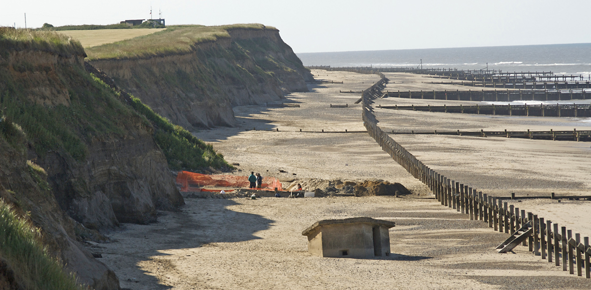Happisburgh, a key site for the Deep History Coast in Norfolk
‘Our work has been about translating very important research that’s been going on along the Norfolk coast, converting it into tourism and education packages, and getting that information out to the public.’ – David Waterhouse
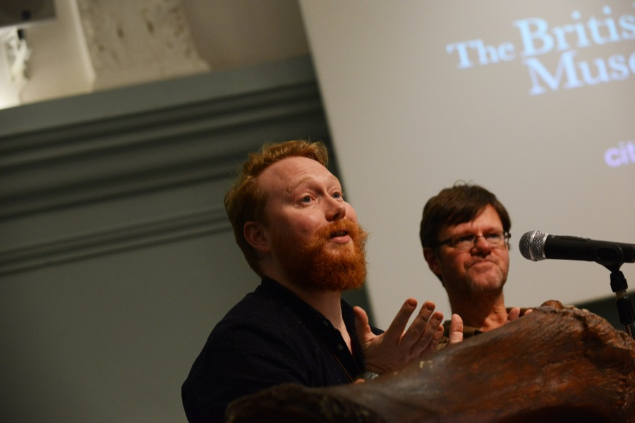
Following on from Nick Ashton, Dr David Waterhouse, Curator of Natural History at Norfolk Museums Service, gave an overview of the Deep History Coast’s public engagement programme.
Fossil roadshows have been taking place at key sites along the Deep History Coast since 2012 – these include lectures and workshops. ‘Collectors and people who walk on the beaches are our eyes and means for recovering a lot of this information’ noted Waterhouse. ‘It’s really about educating the public about what’s on our doorstep, and if they find something, making them aware of what to do with it, where to bring it, how to record it.’
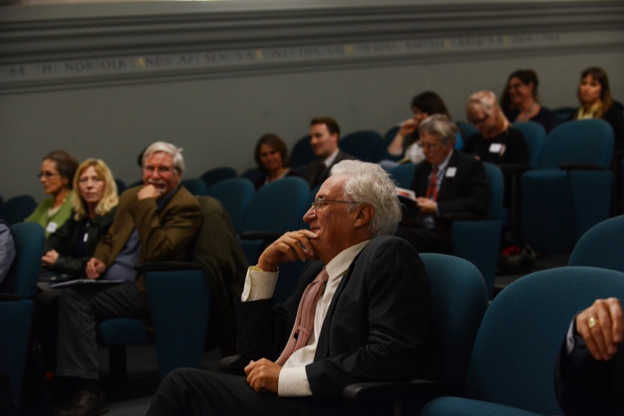
‘This is the long story of Celts and it goes back almost 2,500 years ago…’ – Julia Farley
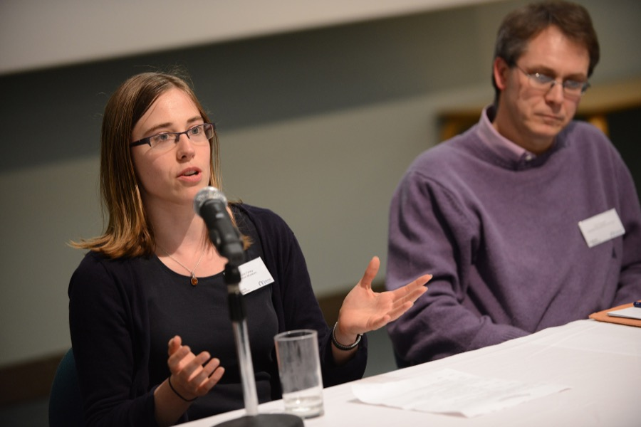
Although the Celts are not a single people, a distinct race or genetic group that can be traced through time, the idea of a Celtic identity still resonates powerfully today, all the more so because it has been continually redefined to echo contemporary concerns over politics, power and religion. ‘Celtic’ is still a word that creates a sense of difference, but what began as a label applied to outsiders by the ancient Greeks has now been proudly embraced to express a sense of shared heritage and belonging. Reflecting a long history of regional difference and independence, Dr Julia Farley tells the story of the Celts through the incredible objects they made, and showcases a number of torcs – a universal symbol of Celtic identity – that feature in the British Museum’s new blockbuster show Celts: art and identity .
Listen to Julia Farley:
‘Ten years ago Norfolk produced about 40% of all portable antiquities found in Britain. We still record over 15,000 finds in the county every year, more than any other county in the country and more than several put together.’ – Tim Pestell
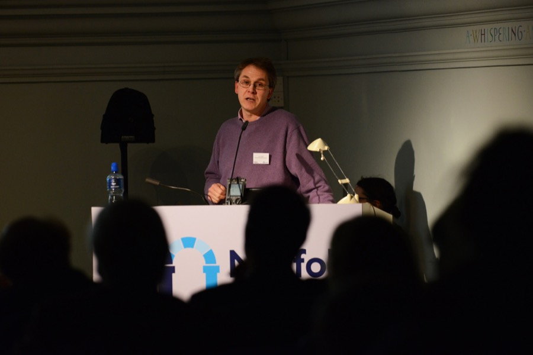
The Portable Antiquities Scheme (PAS) run by the British Museum has resulted in over 1 million archaeological objects and coins found by the public being recorded. In his talk, Dr Tim Pestell, Senior Curator of Archaeology, Norfolk Museums Service, noted that Norfolk has been home to some of the most remarkable finds recorded through the Scheme, with no other part of Britain matching the mass and quality of material seen in the region. Torcs discovered in Snettisham, Norfolk provide a centrepiece to the British Museum’s own Iron Age galleries and Celts exhibition.
Listen to Tim Pestell:
‘It’s really up to us as a sector to take on the challenge and opportunity of what a changing digital environment means and make ourselves ever more relevant to our audiences as a result.’
– Chris Michaels
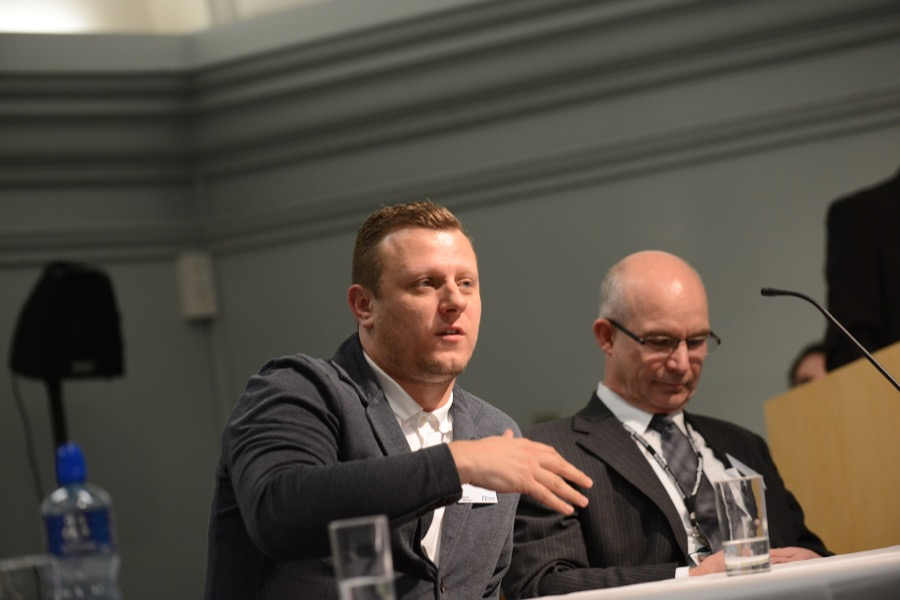
Digital technology has and will continue to fundamentally change the museum sector. In his talk Dr Chris Michaels, the British Museum’s Head of Digital and Publishing, noted that the sector is currently experiencing a second wave of what digital means in museums, powered by greater access to smartphones, which will soon outnumber the global population.
Following an overview of the British Museum’s recent work across mobile, social and big data, Michaels encouraged organisations to take advantage of the new possibilities that digital allows for museums to encounter and respond to audiences.
Listen to Dr Chris Micheals:
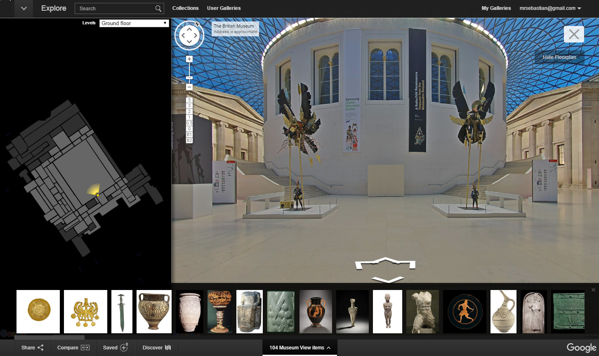
‘Norwich Castle is a gem of a building but over the years we have been getting the feeling that it is not fulfilling its potential.’ – John Davies
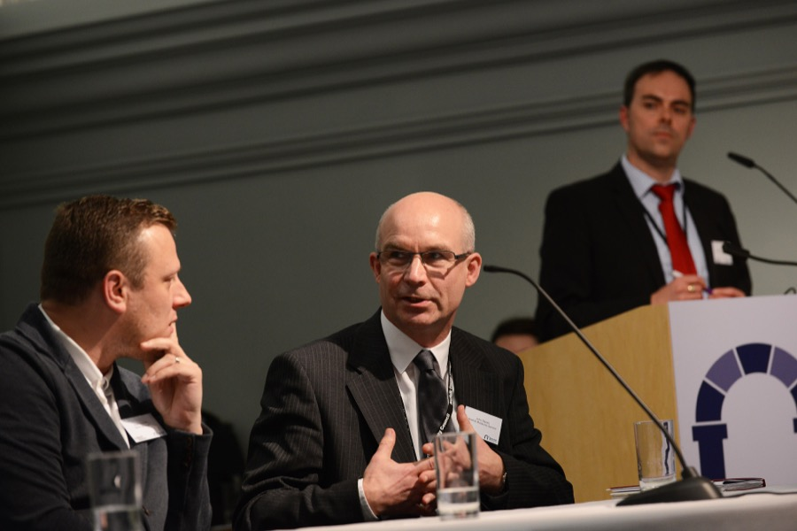
Dr John Davies from Norwich Castle Museums took the audience through plans to transform the keep of the 900-year-old building and recreate how it looked when it was one of the most majestic Norman keeps in Europe. The development, which is slated to become East Anglia’s most popular tourist spot, will bring 100,000 visitors to the region.
Listen to John Davies:
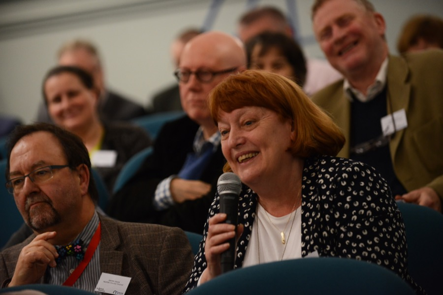
Museum of the citizen is a new events programme and public discussion that aims to celebrate the British Museum’s work with partners, large and small, who help us reach the broadest possible audience.